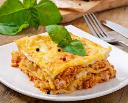

Lasagna

Description
Lasagna is a classic Italian dish
made with layers of wide pasta sheets,
rich meat sauce, creamy béchamel or ricotta,
and plenty of melted cheese. It's baked until
golden and bubbly,
creating a hearty, comforting meal
perfect for family dinners.
Ingredients
- 12 lasagna noodles
- 1 lb ground beef
- 1 onion, chopped
- 2 cloves garlic, minced
- 24 oz marinara sauce
- 15 oz ricotta cheese
- 2 cups shredded mozzarella cheese
- 1/2 cup grated Parmesan cheese
- 1 egg
- Salt and pepper to taste
Steps
- Preheat oven to 375°F (190°C).
- Cook lasagna noodles according to package instructions. Drain and set aside.
- In a large skillet, cook ground beef, onion, and garlic over medium heat until browned. Drain excess fat.
- Add marinara sauce to the meat mixture and simmer for 10 minutes. Season with salt and pepper.
- In a bowl, combine ricotta cheese, egg, and half of the Parmesan cheese. Mix well.
- Spread a thin layer of meat sauce in the bottom of a 9x13 inch baking dish. Layer with noodles, ricotta mixture, meat sauce, and mozzarella cheese. Repeat layers, ending with mozzarella and remaining Parmesan on top.
- Cover with foil and bake for 25 minutes. Remove foil and bake for an additional 25 minutes or until cheese is bubbly and golden.
- Let lasagna cool for 10 minutes before serving.
home